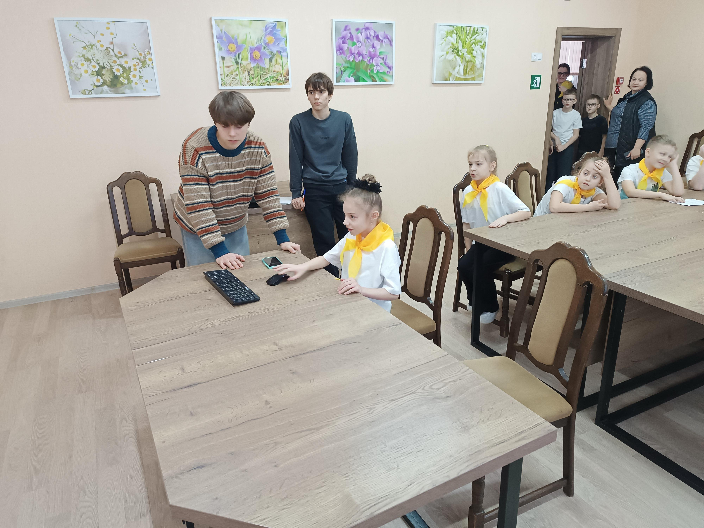
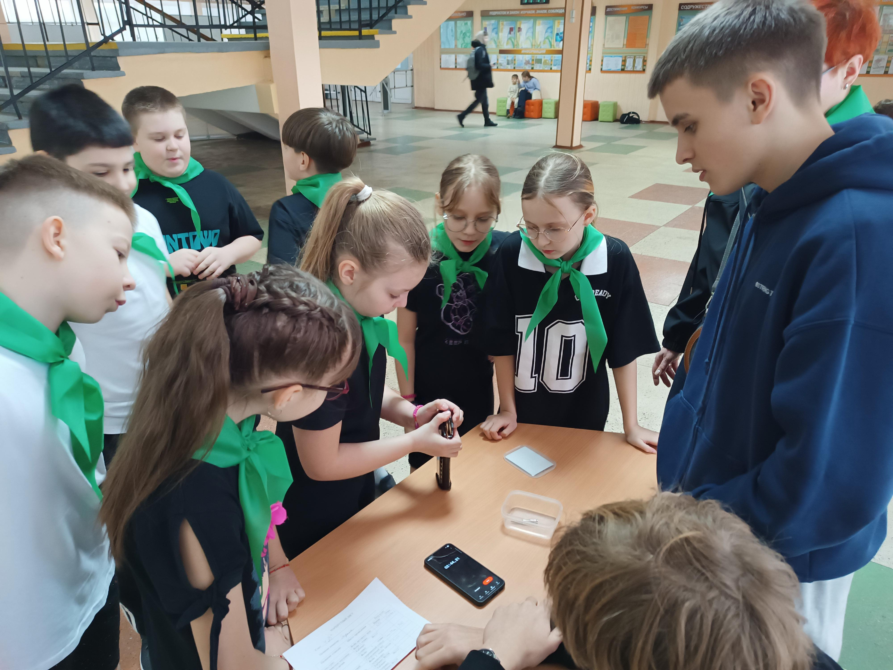
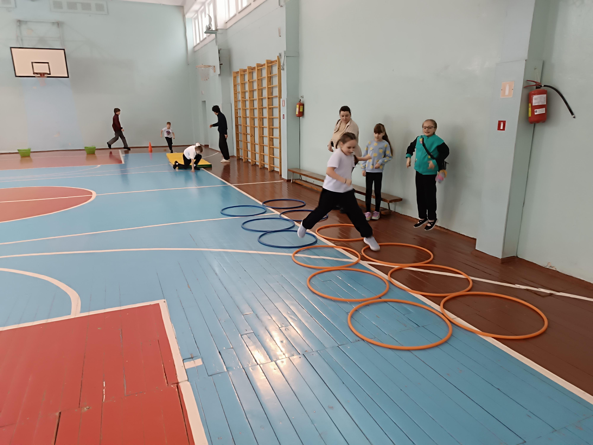
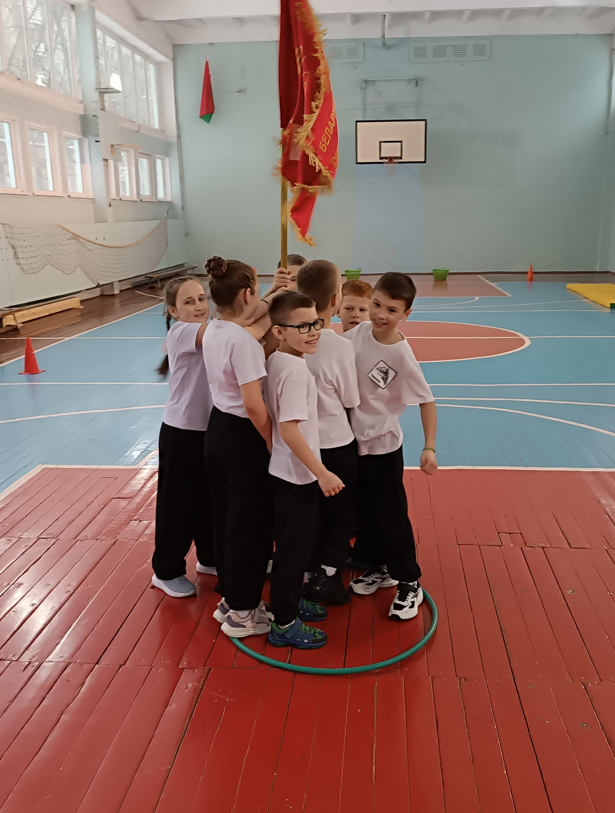
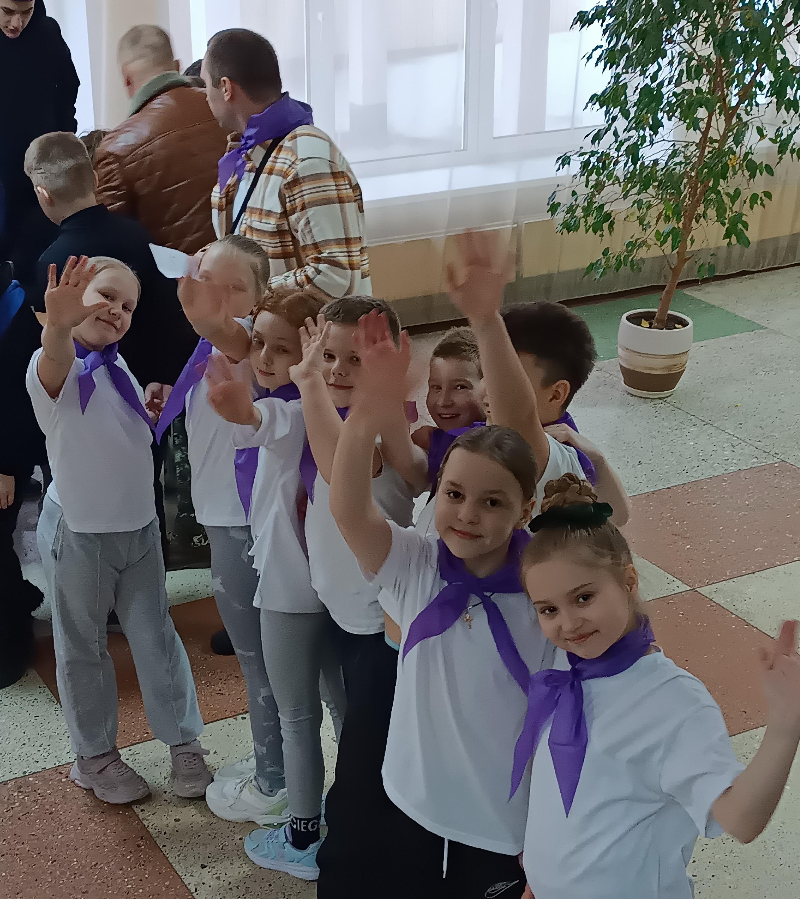
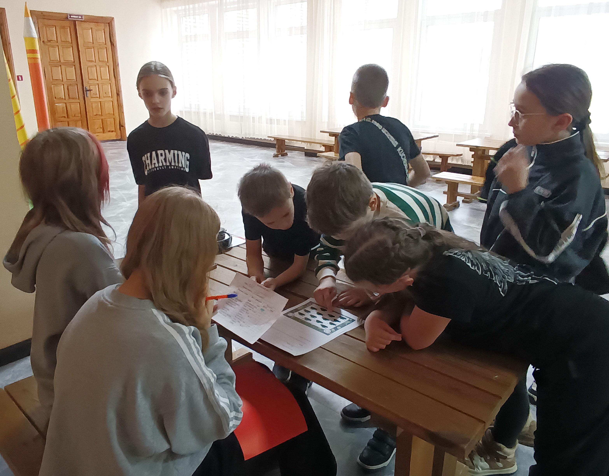
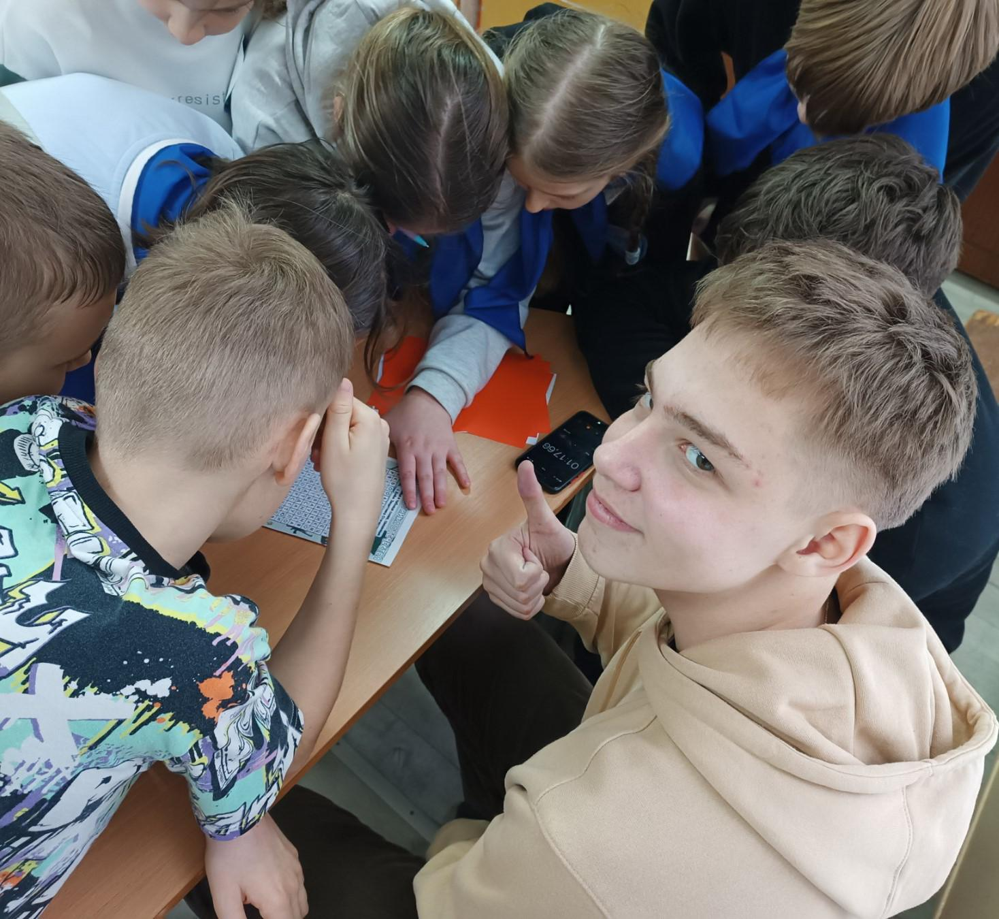
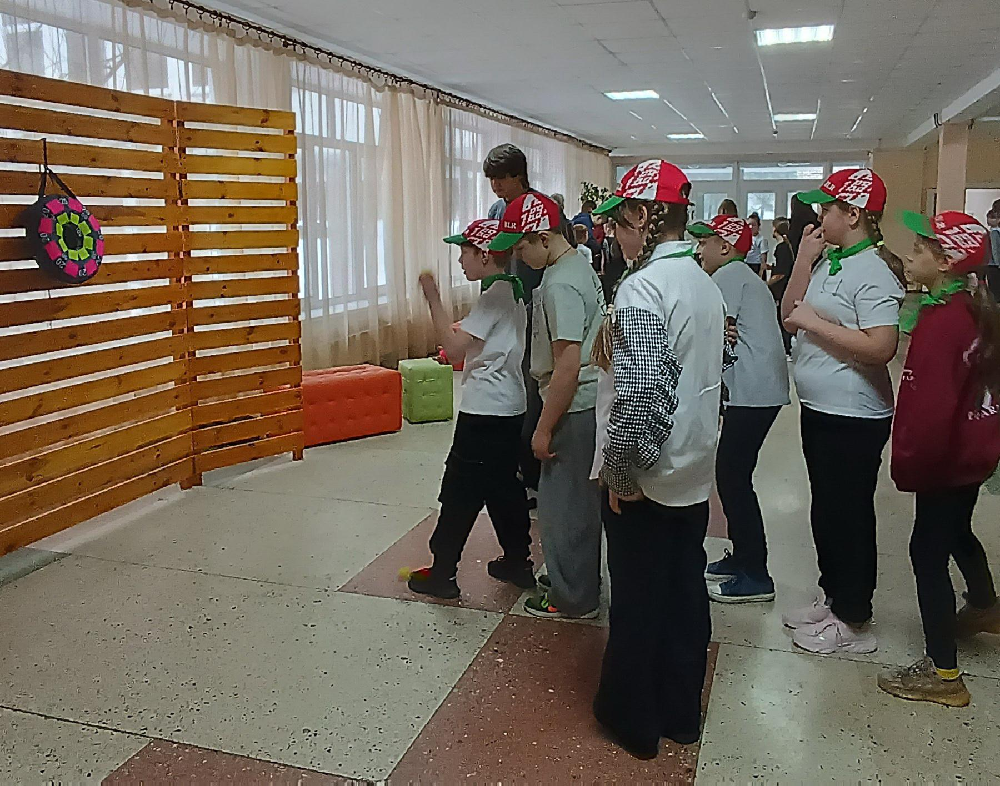
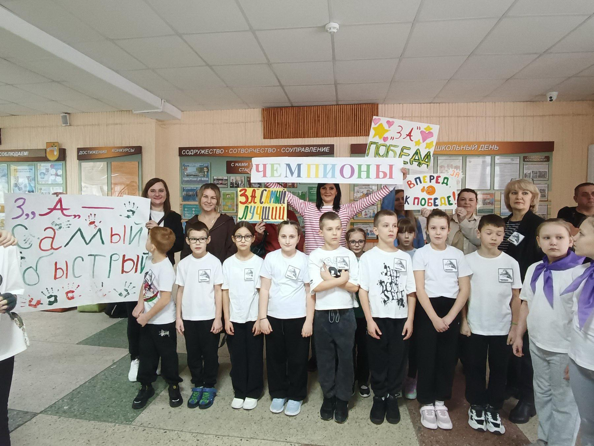
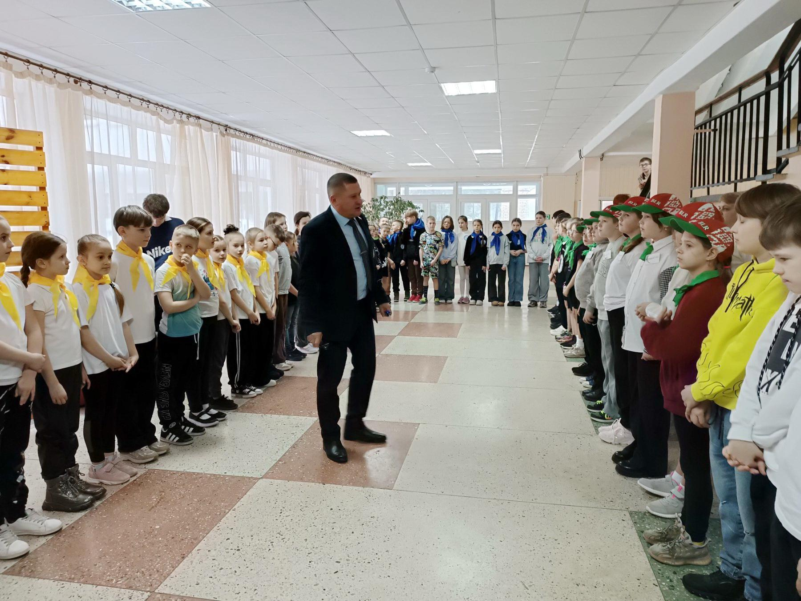

ВОЕННО-ПАТРИОТИЧЕСКАЯ ИГРА «ЗАРНИЧКА»
14 февраля, в преддверии Дня защитников Отечества и Вооруженных Сил Республики Беларусь, учащиеся 3-4 классов приняли участие в военно-патриотической игре «Зарничка». Всего за звание победителя боролись 9 команд. 72 зарничника с нетерпением ждали начало игры.


Ребята выбрали капитанов, придумали названия и девизы команд. Поддержать октябрят в ходе испытаний пришли их родители. Особенно активными болельщиками были родители 3 «А» класса. Нельзя не отметить и 3 «Г» класс, который выставил на «Зарничку» целых две команды.



Помощь в организации и проведении игры оказали волонтеры – члены первичных организации ОО «БРСМ» и «БРПО» нашей гимназии, они же выполняли и роль судей на станциях.
И вот, после выдачи маршрутных листов, долгожданный старт. Всем участникам предстояло пройти 9 испытаний, которые включали в себя полосу препятствий, соревнования в меткости, интеллектуальные конкурсы, конкурсы на внимательность и память.



И вот, после выдачи маршрутных листов, долгожданный старт. Всем участникам предстояло пройти 9 испытаний, которые включали в себя полосу препятствий, соревнования в меткости, интеллектуальные конкурсы, конкурсы на внимательность и память.

